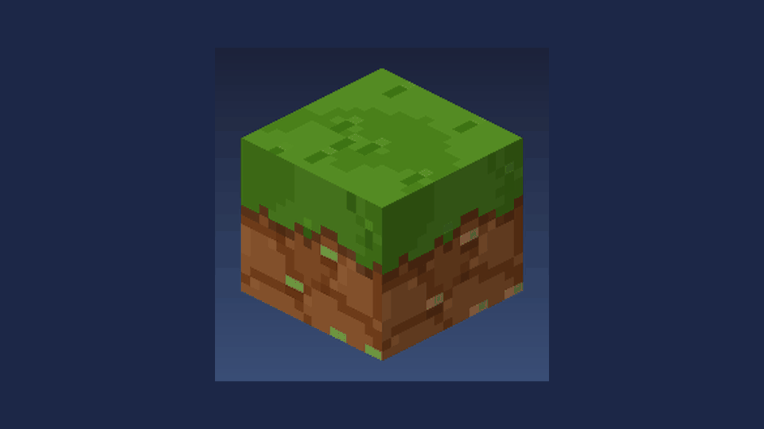

إضافة بيدروك
نبض — بلوكات بعمق ولمعان
بلوكات مرسومة من جديد بعمق ولمعان، حركة أحلى للاعب، ورؤية ليلية تقدر تطفيها.
⬇ تحميل 4.4 MB
✔ يشتغل على: Bedrock 26.62، 1.21.120+ · يحتاج Bedrock Add-on
✔ بدأ التحميل! الحين سوّ الخطوات اللي تحت 👇
🛠 شلون أثبّته؟
عن هذا العمل
حزمة «نبض» الرسمية للموقع، فيها شي:
• أكثر من 5000 تكستر بلوك مرسومة يدوياً بعمق ولمعان، وتشتغل أحلى مع Vibrant Visuals.
• إضاءة وضباب خاص لكل بيئة (صحراء، ثلج، نذر، إند…).
• حركة أكثر حيوية للاعب.
• 4 خيارات للأيتمات من زر الترس ⚙ بإعدادات الحزمة: أيتمات نبض مع الحركات أو بدونها، أو أيتمات اللعبة الأصلية.
• إضافة الرؤية الليلية: تشوف زين بالليل وتحت الأرض. تطفيها وتشغلها بالأمر /nabd:settings (ما يحتاج غش).
يحتاج ماين كرافت 1.21.120 أو أحدث. الملف فيه حزمتين: فعّل «نبض» من Resource Packs و«نبض - إضافات» من Behavior Packs.
• أكثر من 5000 تكستر بلوك مرسومة يدوياً بعمق ولمعان، وتشتغل أحلى مع Vibrant Visuals.
• إضاءة وضباب خاص لكل بيئة (صحراء، ثلج، نذر، إند…).
• حركة أكثر حيوية للاعب.
• 4 خيارات للأيتمات من زر الترس ⚙ بإعدادات الحزمة: أيتمات نبض مع الحركات أو بدونها، أو أيتمات اللعبة الأصلية.
• إضافة الرؤية الليلية: تشوف زين بالليل وتحت الأرض. تطفيها وتشغلها بالأمر /nabd:settings (ما يحتاج غش).
يحتاج ماين كرافت 1.21.120 أو أحدث. الملف فيه حزمتين: فعّل «نبض» من Resource Packs و«نبض - إضافات» من Behavior Packs.
معلومات
| النوع | إضافة بيدروك |
| النسخة | Bedrock |
| المحمّل / الصيغة | Bedrock Add-on |
| إصدارات ماين كرافت | 26.62، 1.21.120+ |
| إصدار الملف | 1.0.61 |
| الحجم | 4.4 MB |
| التحميلات | 3 |
| تاريخ النشر | 2026-11-17 |
بلوكاتإضاءةرؤية ليليةVibrant Visuals
سجل التحديثات
- 1.0.61 — الإصدار الأول على الموقع
🔒 بصمة الملف (SHA-256) للتأكد إنه أصلي
6cad9487b94bef4641963579f7b3fde8eb4c2ec8da474103f977f2950741cfe1
💬 آراء اللاعبين
ما فيه آراء بعد. كن أول واحد!
الرأي يحتاج حساب GitHub مجاني، وما يظهر هنا إلا بعد ما أراجعه.